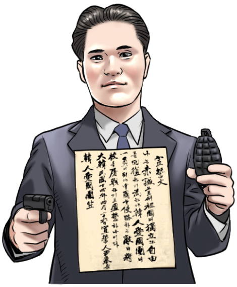

상하이(上海)
훙커우(虹口) 공원이라고 불렸던 상하이 루쉰(鲁迅)
공원은 1932년 4월 29일 일본의 전승 기념 행사
단상에 윤봉길 의사가 물통 폭탄을 투척했던 곳입니다.
공원 내에 윤봉길 의사 기념관이 있습니다.
공원은 1932년 4월 29일 일본의 전승 기념 행사
단상에 윤봉길 의사가 물통 폭탄을 투척했던 곳입니다.
공원 내에 윤봉길 의사 기념관이 있습니다.